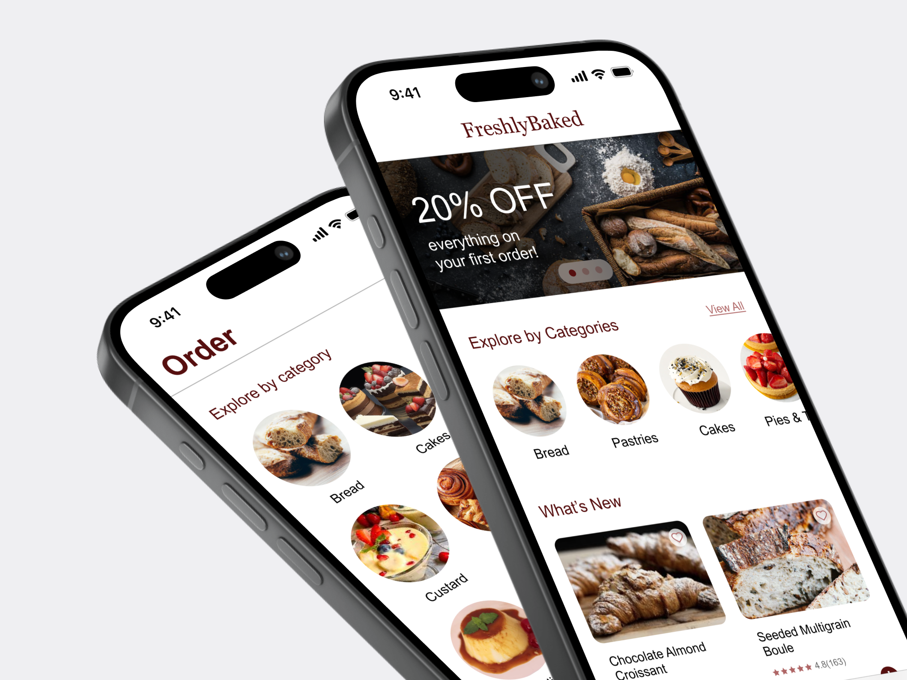
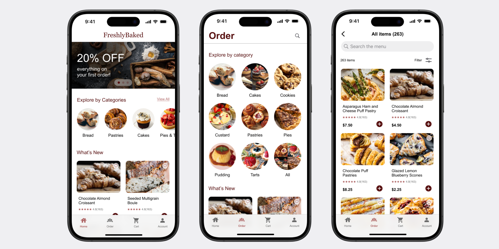
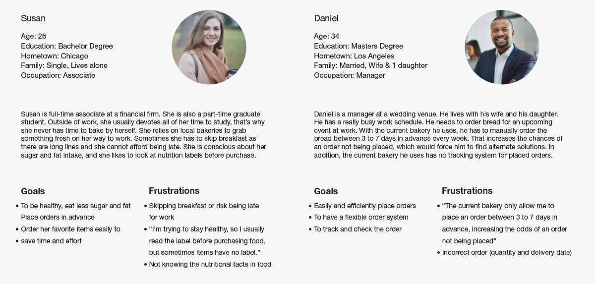
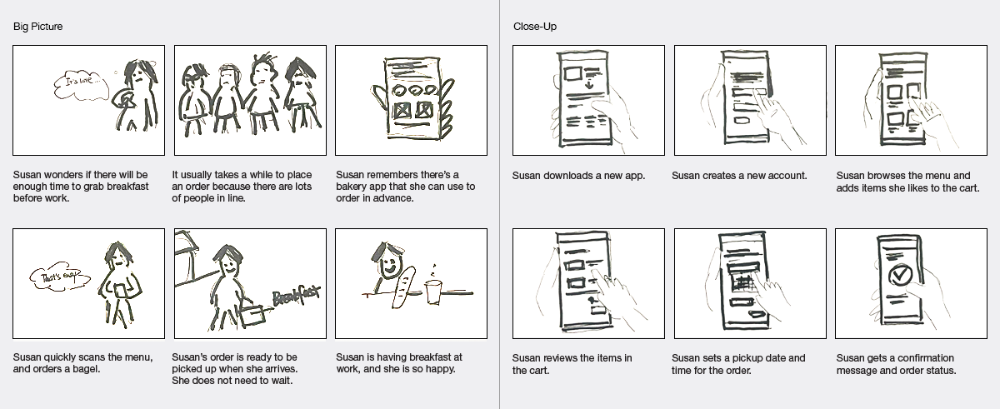
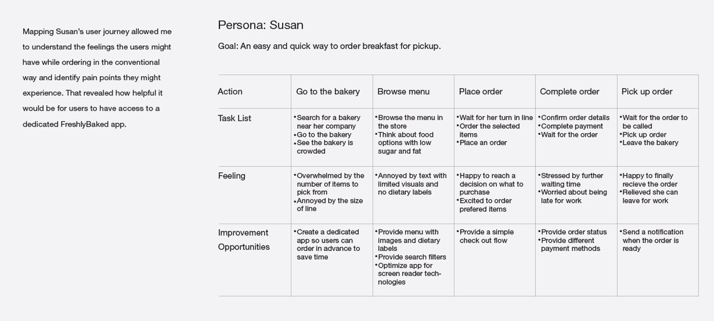
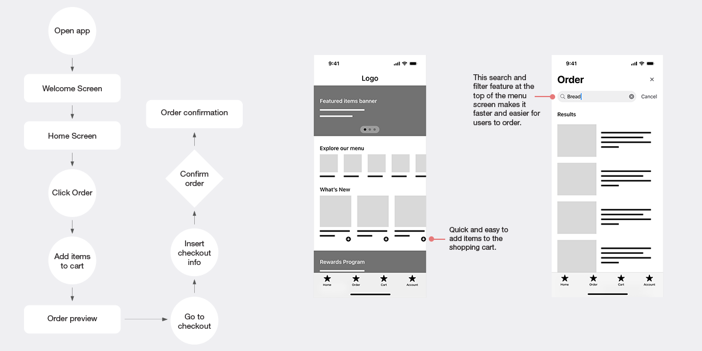
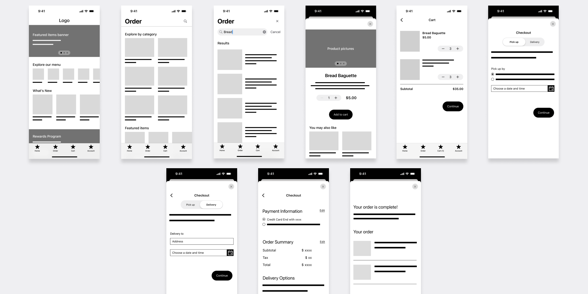
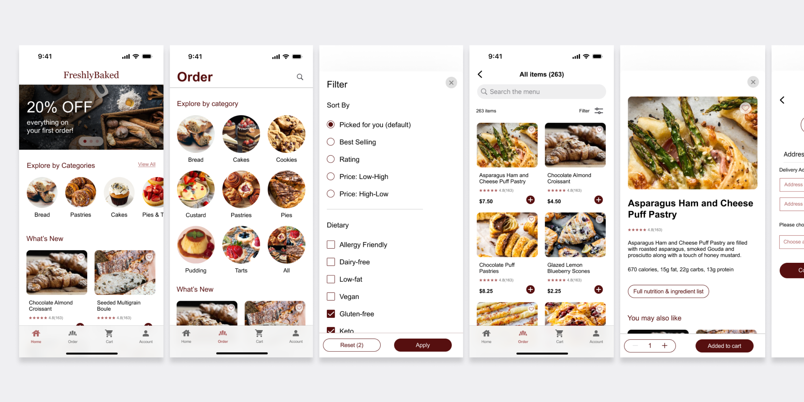

FreshlyBaked
Design an intuitive mobile ordering app experience for a fancy bakery.

Overview
As part of the Google UX Design Certificate, I designed a mobile ordering app for a high-end bakery as my case study.
The goal was to create an app that allows users to easily explore and order items due to their lack of time and knowledge to bake.

User Research: Summary
I conducted interviews and created empathy maps to understand user needs. Research identified a primary user group: those too busy to bake. This confirmed initial assumptions about FreshlyBaked's customers.



Paper and Digital Wireframes
After sketching several versions of how to structure infomation on the page, I narrowed down the design into a single refined wireframe, and transfered it to the digital wireframe.


Usability Study: Findings
I conducted two usability studies. The first guided designs from wireframes to mockups. The second, using a high-fidelity prototype, identified areas for refinement.
Here are my findings:
1. Users want to remove an item from the cart.
2. Users want an easy way to find products.
3. Users want a flexible payment method.
4. Users want a weekly subscription.

Accessibility Considerations
1. Provided access for visually impaired users by adding alt text to images for screen readers.
2. Used icons to make navigation easier.
3. Evaluated color contrast ratios to meet WCAG standards.
Impact
The app makes users feel like FreshlyBaked genuinely considers how to meet their needs. They put users at the forefront and strive to provide them with a great experience.
What I learned